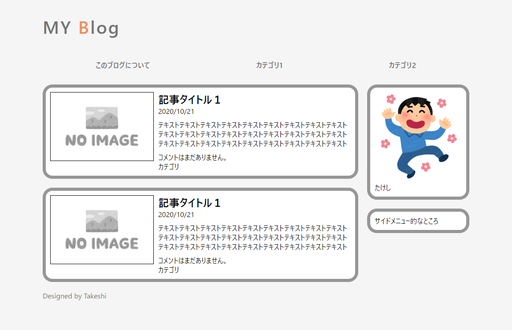
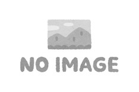
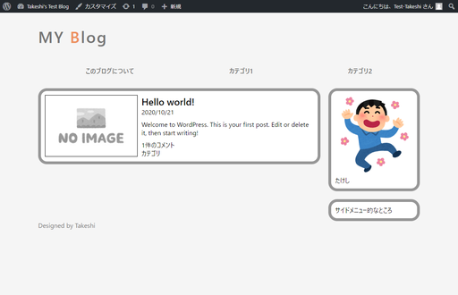
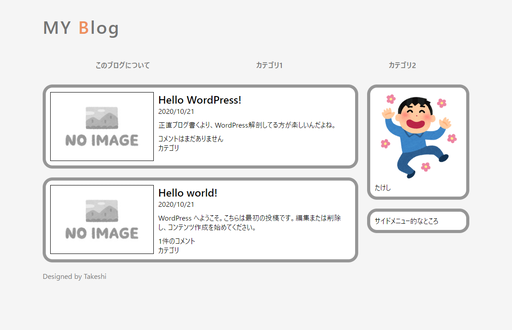

見た目をもうちょっと整える
やはりこれはあんまりにもひどいので見た目を整え

ました。

そんなにすごくないけど、まあブログっぽいかな。これでも作るのに2週間ほどかかった。
HTMLとCSSのソースコード（分割前）
以下にソースを貼っておくので、ファイル分割について知ると記事の内容をとりあえず表示させるを参考にして
index.phpheader.phpfooter.phpsidebar.phpstyle.cssmystyle.css
に分割したうえで、DB内に保存されている記事を表示させてみよう。
HTMLソース
x<html lang="ja"><head> <meta charset="utf-8"> <title>たけしのWordPress</title> <link rel="stylesheet" href="mystyle.css"></head><body> <header> <div class="wrapper"> <div class="container site-title"> <a href="index.html" alt="Blog Link">MY <span>B</span>log</a> </div> <div class="container nav"> <nav> <ul> <li><a href="index.html">このブログについて</a></li> <li><a href="index.html">カテゴリ1</a></li> <li><a href="index.html">カテゴリ2</a></li> </ul> </nav> </div> </div> </header> <main> <div class="wrapper"> <div class="container articles"> <div class="border_outer article_outer"> <div class="border_inner"> <div class="article_summary"> <img src="image/rs-no_image_yoko.jpg" alt="No Image"> <section> <div class="article_summary_header"> <h1>記事タイトル１</h1> <p><time>2020/10/21</time></p> </div> <div class="article_summary_main"> <p>テキストテキストテキストテキストテキストテキストテキストテキストテキストテキストテキストテキストテキストテキストテキストテキストテキストテキストテキストテキストテキストテキストテキストテキストテキストテキストテキスト</p> </div> <div class="article_summary_footer"> <p>コメントはまだありません。</p> <p>カテゴリ</p> </div> </section> </div> </div> </div> <div class="border_outer article"> <div class="border_inner"> <div class="article_summary"> <img src="image/rs-no_image_yoko.jpg" alt="No Image"> <section> <div class="article_summary_header"> <h1>記事タイトル１</h1> <p><time>2020/10/21</time></p> </div> <div class="article_summary_main"> <p>テキストテキストテキストテキストテキストテキストテキストテキストテキストテキストテキストテキストテキストテキストテキストテキストテキストテキストテキストテキストテキストテキストテキストテキストテキストテキストテキスト</p> </div> <div class="article_summary_footer"> <p>コメントはまだありません。</p> <p>カテゴリ</p> </div> </section> </div> </div> </div> </div> <div class="container sidebar"> <div class="profile"> <div class="border_outer"> <div class="border_inner"> <img src="image/rs-pose_dance_ukareru_man.png" alt="Profile image"> <p>たけし</p> </div> </div> </div> <div class="sidemenu"> <div class="border_outer"> <div class="border_inner"> <p>サイドメニュー的なところ</p> </div> </div> </div> </div> </div> </main> <footer> <div class="wrapper"> <div class="container footer"> <div class="pagination"> </div> <div class="credit"> <p>Designed by <a href="https://arcticstreet.ddns.net/">Takeshi</a></p> </div> </div> </div> </footer></body></html>CSSソース
x
* { padding:0; margin:0; box-sizing: border-box;}body { font-family: "Yu gothic UI"; background-color: #f5f5f5;}.wrapper { padding: 0 10px; margin: 0 auto; width: 100%; max-width: 1000px;}.container { padding: 0 10px;}/* ヘッダー */header{ color: #737373;}header a { text-decoration: none; color: #737373;}/* タイトル */.site-title{ height: 120px; display: table-cell; vertical-align: middle;}.site-title a{ text-align: center; font-size: 40px; font-weight: bold; letter-spacing: 3px;}.site-title span{ color: #ED8F5C;}/* ナビゲーションバー */nav ul{ height: 50px; display: flex; justify-content: space-between; list-style: none; align-items: center;}nav ul li{ padding: 0 auto; flex-grow: 1; text-align: center; font-weight: bold; font-size: 13pt;}/* メイン */main{ margin-top: 20px;}main .wrapper{ display: flex;}.sidebar{ width: 250px;}.border_outer { padding: 7px; background-color: #969696; border-radius: 22px;}.border_inner { background-color: white; border-radius: 15px; padding: 10px;}.article_outer { margin-bottom: 20px;}.article_summary{ display: flex; min-width: 400px;}.article_summary img{ border: black solid 1px; margin-right:10px; height: 155px;}.article_summary_header { margin-bottom: 10px;}.article_summary_footer { margin-top: 10px;}.sidemenu { margin-top: 20px;}/* フッター */.footer p{ color: #737373;} .footer a{ text-decoration: none; color: #737373;}画像（いらすとやより：大きさを縮小） imageフォルダをindex.phpと同じ場所に作って、その中に保存。
rs-no_image_yoko.jpg

rs-pose_dance_ukareru_man.png
ローカルでテスト
せっかく前回の記事でローカル上にテスト環境を作成したので、ローカルでちゃんと表示されるかテスト。

良さげ。
アップロードを自動化
以前作ったアップロードスクリプトを利用して
- ローカル上で
index.phpなどを編集 - ローカル上で見た目を確認
- アップロードスクリプトのショートカットをダブルクリック
- リモート上で見た目を確認
の流れにしていきたい。今は2.までできているとする。
状況整理
ローカルのフォルダ：C:\Users\(ユーザー名)\Local Sites\takeshis-test-blog\app\public\wp-content\themesの中身を以下の様にする。
xxxxxxxxxxid_rsa (以前作ったuploadユーザー用の秘密鍵)lasttime.dat (sync.ps1が自動で作るファイル)sync.ps1 (以前作ったアップロードスクリプト)index.php (WordPressが自動で作るファイル)twentynineteen└色々twentyseventeen└色々twentytwenty└色々takeshi-test├index.php├header.php├footer.php├sidebar.php├style.css├mystyle.css└image├rs-no_image_yoko.jpg└rs-pose_dance_ukareru_man.png
リモートのディレクトリ
/home/takeshi/www/html/wordpressblog/wp-content/themes/takeshi-test
sync.ps1の中身
xxxxxxxxxx$targetFolderName = "/takeshi-test"$remoteFolder = "/home/takeshi/www/html/wordpressblog/wp-content/themes/takeshi-test"$remoteAddress = "upload@(Raspberry PiのIP)"$keyName = "id_rsa"$datName = "lasttime.dat"$port = (ポート番号)#--------------------------------------------------------------Set-Location $PSScriptRoot[datetime]$lastdate = (Get-Content $datName)$targetFolder = $PSScriptRoot + $targetFolderName$dirlist = (ssh $remoteAddress -i $keyName -p $port "tree -f -i -d --noreport $remoteFolder")$itemList = Get-ChildItem $targetFolder -Recurse -Fileforeach($item in $itemList){ if ($item.LastWriteTime -gt $lastdate) { $s = (Split-Path $item.FullName -Parent) $localFolderName = $s.Substring($targetFolder.Length, $s.Length - $targetFolder.Length).Replace("\", "/") if($localFolderName -eq ""){ $IsNewFolder = $false } else { $IsNewFolder = $true if($dirlist.GetType().Name -ne "String"){ for ($i = 1; $i -le $dirlist.Length; $i++) { $s = $dirlist[$i] if ("$remoteFolder$localFolderName" -eq $s) { $IsNewFolder = $false break } } } } if ($IsNewFolder -eq $true) { ssh $remoteAddress -i $keyName -p $port "mkdir $remoteFolder$localFolderName" if($dirlist.GetType().Name -ne "String"){ $dirlist += "$remoteFolder$localFolderName" } else { $dirlist = "$dirlist", "$remoteFolder$localFolderName" } } $fileName = $item.FullName.Substring($targetFolder.Length, $item.FullName.Length - $targetFolder.Length) scp -P $port -i $keyName $item.FullName "${remoteAddress}:$remoteFolder$fileName" }}(Get-Date).DateTime > $datName$a = Read-Host "Press Enter"sync.ps1のショートカットをデスクトップに作り、右クリックでプロパティを開き、「リンク先」を以下の文字列にする。
xxxxxxxxxxC:\Windows\System32\WindowsPowerShell\v1.0\powershell.exe -File "C:\Users\(ユーザー名)\Local Sites\takeshis-test-blog\app\public\wp-content\themes\sync.ps1"
必要であればPowerShellの実行ポリシーを変更しておく。
xxxxxxxxxx> Set-ExecutionPolicy RemoteSigned作ったショートカットをダブルクリックするとアップロードが始まる。
確認

とりあえずこんなもんか。